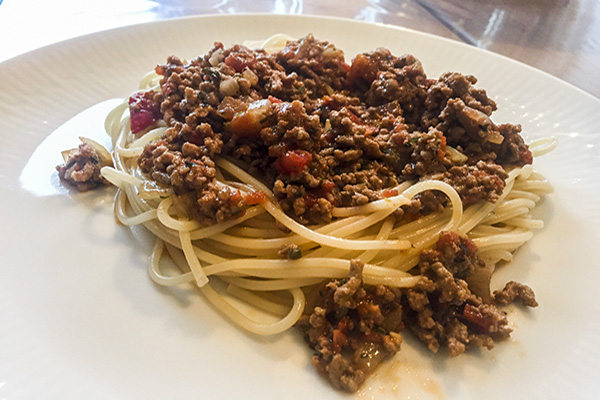

Spaghetti med kødsovs:
Til spaghetti med kødsovs, skal du bruge følgende ingredienser.
Denne opskrift er tilegnet 3-4 personer.
- 1 stort løg
- 1-2 fed hvidløg
- 500 g hakket oksekød
- 1 ds Flåede tomater
- Basilikum + oregano
- 1 tsk salt
- 1 tsk sukker
- Reven gulerod 3 stk (valgfri)
- Evt fløde eller mælk
- Spaghetti
- Start med at snitte et stort løg i små tern, og pres 1-2 fed hvidløg. Disse ingredienser steges herefter i en gryde tilsat olie/margarine, til de er klare.
- Tilsæt derefter 500 g hakket oksekød, og brun det.
- Når kødet er brunet, tilsætter du en dåse flåede tomater.
- Tilsæt derefter basilikum og oregano, 1 tsk. salt og sukker. Du tilføjer selvfølgelig bare mere, hvis du ikke synes det smager af nok.
- Hvis du evt. har nogle gulerødder liggende i køleskabet, kan du med fordel rive dem, og bruge dem i kødsovsen.
- Hæld derefter en smule fløde eller mælk i sovsen, og lad det stå og simre i nogle minutter.
Denne ret koster ca. 40 kr i alt, hvis man har småting som salt, sukker, mælk og andre krydderier.
Hvis du ønsker andre ingredienser, kan du selvfølgelig altid tilføje til du synes den er perfekt.
